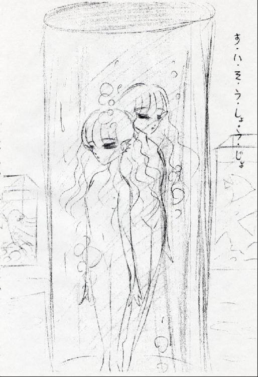

| 水槽少女 | |
| 月夜野スミレ | |
| tukiyonosumire (2013) | |
水槽少女
作 月夜野スミレ
ここは緑多く、白い建物ばかりが整然と立ち並ぶ、海に近い小高い大きな丘の上に建てられた美しい街。それは、昼は暑い日差しの光を受けて輝き、夜は深い闇に浮かび上がり、本当に、美しい町だった。
白い建物は丘の上へ行けばいくほど増え、遠くから見ると、それはまるでお城の様に見えた。反対に、海辺に近い下町の方は、濃い緑に囲まれ、その姿は要として知れなかった。だが、人々は気にしない、人々の興味が、用があるのは、白い建物の真珠のように美しいこの街だけだ。濃い緑の中の生活など、知ったことではない。
ここを訪れる人々はただ道を行く。丘の上の白い街へ続く、ただ一つの道だけを。森の中にいくつも伸びる、粗末な獣道の様な道は歯牙にもかけないものだ。白い街の人々はそれが自慢であり、誇りだった。道を行く人々は対外、白いお城の頂き、やがて一番頂上の小さな白い建物へと行きつく。そこには水族館がある。この世界で、もっとも稀な、貴重な施設へと・・・・・・。
水族館には、二人の少女が暮らしていた。膨らみかけた胸。すんなりした手足。・・・二人は美しい少女だった。だが、二人の存在を入場者の誰一人、知る者はいない。誰も・・・・。
館内は限られた者しか入場を許されず、見物客の数は少ない。人通りは、まばらだ。青白い館内は静かで、ただ水が光を受け、チラチラと踊っている。その水槽の中を、沢山の魚たちと共に二つの瞳が泳いでいた。翡翠と琥珀の二人の少女の瞳。
二人の少女はマジックミラーになっている水槽の内側から、手を繋ぎ、水槽の間を行きかう人々をぼんやりと見ていた。繋いでいない開いた手は水槽の冷たい硝子に触れ、行きかう人々の後を追い掛けていた。
だが、魚影を楽しむ客達の方からは二人の姿は見えない。だから何も気付かず女性が一人、男性が一人、子供が二人、横切っていく。少女達はそれを寂しく思いながらたった二人きり、微笑みあった。
「親子かな」「ペンギンを見て笑っているね」
「楽しそう」「楽しそう・・・・・」
二人は家族を持たない。お互いと、この水族館の裏側に密やかに作られた彼女達の水槽の世界しか知らない。それが二人の世界の全てだった。
二人は髪の黄金色を揺らして、客達に手を振ってみる。翡翠色の瞳で、琥珀色の瞳で微笑みかけてみる。
それでも、二人の少女の姿が見物客達に見える事はない、彼らは少女達に気付かず、笑いながら通り過ぎていく。少女達は表情を無くしその見物客達の後姿をぼんやりと見つめた。見つめ続けていた。
私達はここに居る。とても淋しいの。気づいて欲しい。
誰か、誰か・・・・・。
二人の少女の名前はジェイドとアンバーといった。双子のようにそっくりだが、姉妹ではない。ただ一緒に暮らしているだけ。ここで生きているだけ。
ジェイドは真っ直ぐで強く深遠な瞳をしている。反対に、アンバーの瞳は穏やかで悲しい輝きだった。彼女は内気でおとなしい。明るい気性で勇ましいジェイドとは正反対だ。
それでも二人は、いつも一緒にいた。
静寂に満ちた水族館の裏側で二人の姿は異質だったが、水中に没した森のように、陸に打ち上げられた珍しい深海魚のように命を輝かせ、ひどく鮮やかでもあった。
二人は衣服を一切身に付けていなかった。白く細い腰に少しウェーブした長い長い髪が腰の辺りまで広がっているだけ。
「ねえ、ジェイド。外の暮らしは楽しいのかしら・・・・・」
「どうなのかな。でも、私達には関係の無い世界よ」
「・・・・・そうね。きっとそうね・・・・・」
二人は物心付いた頃から、この水族館の中で暮らしている。外へ出る事はめったに無い。たまに夜遅く、近くの浜辺に海水浴に連れて行ってもらう程度だ。でも二人に会いに来てくれる人もいる。そう、いつもいつも寂しいわけではなかった。
「そろそろヤグ達が来るわ」
「そうね、何か面白い物持ってきてくれないかしら。可愛い絵本とか、レースのドレスとかね。」
二人はくすくすと笑った。
この水族館には、ヤグ、フュナク、ミメットという三人の若く、美しい飼育係が働いていて、そのうちの誰かが、または日によって全員が、毎日二人に会いに来た。二人の世話や、彼女達の自室の掃除の為。三人の飼育係達はとても注意深く二人の世話をする。二人の為に素敵な本や、小物、二人が喜ぶような物も見つけてきてくれる。とても大事にしてくれる。二人は三人が大好きだった。
「今日は海に連れて行ってくれるかしら」
「そうね、ジェイドは海が好きね」
「アンバーだって好きでしょう」
「・・・・・・ええ、連れて行ってくれると良いわね。」
「だけど・・・・あの、園長のお許しがなければね。」
「ああ、そうだったわね。」
ジェイドは嫌な事を思い出したように、顔をしかめて、溜め息をついた。
他にも、この水族館には、陰気で神経質で無愛想だが、ローズ・ストーンという園長もいた。
園長は大概、水族館の奥にある「園長室」で大きな椅子に座って、無愛想に書類に向かい何事か書き付けている。化粧気も無く、他の、若く美しい飼育係の三人と比べて精彩に欠き、表情も無く、いかにも不健康そうな青白い女だ。二人には、あまり会いに来ない。でも扱いは存外「粗雑」というわけでもない。いま一つ、謎めいていて、データが少なすぎて、二人は彼女の事を掴めない。
仕事にはあらゆる感情を挟まず、ただ滞りなく機械的に仕事をこなし生きている。少し冷たく、機械的な・・・・・そう、彼女はそういう人間なのかもしれない。ジェイドとアンバーは、彼女の事はあまり好きではないので、いつも冷めた目線で彼女を見ていた。
二人の思う通り、確かに園長はそんな人間だった。園長は毎日、定時きっかりに出勤し、定時きっかりに退園していく。
「あの人、何が楽しくて生きているのかしら。」
「・・・・分からないわ。」
幼い二人から見ると彼女はたいそう退屈で不気味な人間に見えた。何故彼女が、毎日ここに来て、飼育係達にへつらわれているのか。分からない。そもそも｢園長｣とはなんだろう。｢飼育係｣の意味も知らない。だが、飼育係は自分達にとって、とても必要で、園長が、この水族館内で最高の権力を持っている。それだけは分かる。
その時、ガラガラと賑やかな音を立てバケツやブラシを持ち、作業服に着替えた三人の若者達の足音が近づいてきた。二人は、急にさっきまで考えていた事を忘れて、わくわくと、楽しくなった。
今日も三人に会える。身の回りの世話をしてもらえる、色々話してもらえる。ちょうど退屈し始めていた時だ。彼らはいつも勤勉に働く、自分達は今日も楽しく過ごせるだろうか。
｢おはよう、ジェイド、アンバー。今日のご機嫌はどうかな？｣
開け放たれたドアから一人の飼育係の青年がチャーミングな笑顔を覗かせた。
｢ヤグ！！｣
二人は子犬のように青年の元へ駆けた。青年は二人を優しく抱き上げてくれた。
飼育係。
彼らはこの冷たい水槽の中で、二人の唯一の温もり、とても、大切な存在。
ヤグとフュナクは、とてもハンサムな青年達で、二人の水槽を、水族館中をいつもピカピカに磨き上げ、清潔に保ってくれている。館内全域の飼育物の世話もしている。
ヤグは少し野生的な目をしたくしゃくしゃ髪の眼鏡をかけた青年で、フュナクは髪の長い、美しい顔立ちの、限りなくやさしい雰囲気の青年だ。
ジェイドとアンバーは二人の事がとても好きだった。彼らに抱きしめられると胸が切なくなる。懐かしくて、寂しくて、涙が出そうになる。それが、飼育係達が持ってきてくれる本の中に載っている「恋」とかいう物なのかは分からないけれど、「私は二人が好きだわ」ジェイドもアンバーも思っている。二人はとても素敵な男性だった。
唯一の女性ミメットは美人ではないが、幼顔の可愛らしい女性で、水族館中の飼育物達の餌の管理を任されていた。二人の食事も彼女が用意してくれる。ミメットは、毎日二人を優しく包み込み、髪を綺麗に鋤いたり、結ったり、飾ったりしてくれる。そんなミメットを、二人は特に気に入り、まるで、「お母さん」の様に慕っていた。
女の子三人だけ寄り集まって、よく内緒話をした。ミメットはいつもクスクスと愛らしく笑った。二人はその顔を見ると、いつも心の中がぽっと暖かくなった。
愛しい三人の若者。大切な、大切な、私の飼育係。
何よりも、そう、彼らは夜遅く二人を海岸に連れて行ってくれる。それは二人の一番の楽しみだった。海の水の冷たさは、素足の下で軋む砂浜の砂の感触は、最高に気持ち良い。綺麗な小貝や海藻を拾うのも楽しい。丸くなったガラス片や、小石も落ちている。
そんな時、彼らは、いつも全員で付いて来てくれる。二人は大好きな海辺で、大好きな三人を二人占めに出来る。とても幸せだ。
海へ行く日、五人は、夜遅く、月だけが照らす水族館の裏口から秘密の小道を下って、丘の麓の人気の無い砂浜へと出る。
そこは四、五メートルほどの小さな砂浜で、それでも波は寄せては引き、寄せては引き、心地よい潮の香りを運んでくる。回りは岩場が広く遠くまで広がっており、その小さな浜はさしずめ、小さなプライベートビーチという風情だ。
飼育係達と二人の少女は、海の水をかけ合い、波間を駆けて、楽しい時間を過ごした。
水族館の私有地であるこの浜辺に彼らの他に人影は無い。この浜辺のことを知る者は他に誰もいない。一般人は立ち入り禁止区域になっているのだ。小さな浜辺は静かで、明るい月に照らされて、波が光り、五人の笑顔と笑い声が踊って、そのひと時は夢のように美しかった。
ミメットが二人の髪に色とりどりの美しい貝や海草を飾ってくれた。その髪飾りは、とても自然で、まるで初めからそう用意されていた様に二人の容姿によく馴染み、引き立てた。
ミメットは「とても綺麗よ」と愛らしく微笑む。
二人も微笑み返した。
若い飼育係達は、二人にいつも注意を払っている。危険が及ばない様に、離れない様に。二人を消して見失わない様に。海に攫われない様に・・・・。海に入る時は二人が潮の流れに流されたりしないように、ヤグか、フュナクがしっかりと抱きしめていてくれた。
こうして二人は水族館で暮らしていた。毎日が、静かに穏やかに過ぎていく。園長、飼育係達以外の人間と交流出来ないのが唯一、淋しい事だが、二人は、自分達は幸せに暮らしていると思っていた。だが、成長するにつけ、様々な事が気になりだしたのだ。いつからか、どうしてか。
この水族館では、みんな、それぞれに、その人間なりに二人を大事にしてくれる。だけど、何かが奇妙。おかしな生活。成長し、館内を行きかう人々を眺めるにつけ、その「おかしさ」に気付き始めてしまった。
二人は水族館の舞台裏で人の目から隠されて育てられ、暮らし、そこから出ることを禁じられていた。
唯一自由な時間は夜。二人は人のいなくなった真夜中の水族館で、裸体で走り回り、幾百とある様々な魚達の眠る水槽の間を遊んだ。
これほど大切にしてくれながら、三人の飼育係と、園長は何故か二人に衣服の類は一切与えてはくれなかった。夜、浜辺に行く時も二人は裸で遊んだ。
ごくたまに近くの町へ連れて行く時のみ、真新しい服と靴を着せてくれる。二人は今まで、それに何も不満は無かった。そうする事が普通だった。気づいてしまうまで。
ある日、ジェイドは二人をかまってくれていたミメットに言ってみた。さり気なく、疑問をぶつけてみたのだ。
「・・・・・ミメットはいつも、その作業服を着ているのね。
ここから出れば可愛い洋服に着替えているし、入場者の人達も、あのローズ園長だって・・・・、みんな着る物を沢山持っている。私達は肌着だって持っていないのに。ずるいわ」
「え？」
ジェイドの言葉に、アンバーの髪を櫛（くし）ですいていたミメットは、ギョッとして顔を上げた。随分と大げさな反応だ。アンバーはその様子を黙ってうかがっている。だが、すぐに、ミメットは平静を取り戻すと、唄うように笑って言った。
「・・・・それは、二人が大きくなったらね。今は必要ないのよ。おしゃれは、子供には、まだ早いから♪｣
「・・・・・ドケチ」
ジェイドは頬を膨らませた。アンバーは琥珀の瞳を伏せた。
必要ない・・・・・か。そこに真実が隠れている様な気がする。
水族館の、ここの人々は、やはり変だ。それとも、変なのは自分達・・・・・なのだろうか。まだはっきりとは言えない。もっと良く考えてみなくては・・・・・。
彼らは絶えず、二人の健康を気使い、食事を用意してくれ、いつも身の回りを清潔に保ち、いろいろ綺麗な道具も与えてくれる。抱きしめて、優しく撫でてもくれるのに。大切にされているのは分かる。愛されていないとも思わない。
だが、いつも感じるのだ。彼らと二人の間に立ち塞がる｢隔たり｣に。
どうして、靴や、服を買ってはくれないのだろう。何故、いつも裸で過ごさせるのだろう。年頃の｢女の子｣を。
水槽に入れ、魚のように。
そう、二人は毎日、水槽で寝ていた。二人の部屋、大きな水槽には小さなプールと、人一人が直立して入れる位の円筒形の水槽が二つ備え付けてある。

その周りに二人は好きな様に飼育係達が持ってきてくれた、素敵な物を飾って楽しんだ。二人の部屋はいつも水の匂いがしてとても清潔だった。
毎日、夜以外、大概の時間を二人はその部屋で過ごし、遊んだ。部屋は展示物の水槽と、水族館の裏側のちょうど合間にマジックミラーで、秘密で作られ、水族館の関係者と、本人達、ジェイドとアンバー以外、誰も知らない。とにかく、部屋は内側の壁がすべてマジックミラーになっており、ここからは冒頭の様に水族館中をぐるりと望む事が出来た。
そんな、水生生物が泳ぎ回る水槽で囲まれた部屋の中、平日の昼間、二人は部屋に備え付けられた小さなプールで、「シェル」といわれる不思議な小石で、小波（さざなみ）をおこし、渦を作って遊ぶ。二人は水を操る事が出来た。そうすると、飼育係達と園長は、必要以上に二人を褒め称えた。それがもっと上手くなるように勧めた。それも何か引っかかる。もしかしたら、この力は二人の他は誰も持たないのではないか・・・・・。
二人が持つ、水を操ることが出来る小さな一つの石「シェル」。群青色の小さな小さな石。奇妙な物、おかしな物、普通ではありえない物。それ位、二人はとうに気付いている。｢シェル｣は時々、光を受け表面の波の模様が海のように揺らいだ。
｢シェル｣は二人が生まれた時から、二人の側にあった。どんな時も「シェル」は二人の側を離れない。彼女達を守るように。
でも、二人は「シェル」についても何一つ知らない。「シェル」とは何なのだろう。飼育係や、園長が与えてくれた物なのかも分からない。彼らは「シェル」について何も話してくれない。
もしかしたら、何も知らないのかもしれない。
もう眠る時間だ。ジェイドとアンバーは、ふちまでなみなみと海水を満たした水槽の中に滑り込み、たゆたいながら眠る。その水は塩分濃度も、酸素飽和量もちょうどよく、これ以上、過ごしやすい寝床は無い。ここの水は、いつも優しいフュナクが管理している。
この水槽の水は不思議、その中では呼吸をし、ぐっすりと眠る事が出来る。人が水の中で眠れるはずがないから、ジェイドは、この水槽と水は、きっと何か特別な物なのだろうと思っていた。でも、この考えが間違いだとしたら？？
不思議な水槽の中で二人は、時々、海の底で眠る夢を見た。が、本物の海は大好きだが、本当は少し恐ろしい。ひどく惹きつけられて、魅了されて、本当に浚われそうに、引きずり込まれそうになる。薄汚れていて、血の匂いもする。それが怖い。
この消毒薬の匂いがする清潔な水槽の水の中とは全然違う。
アンバーは海の事を考えると何故か、いつも泣き出してしまう。ジェイドも胸がとても苦しい。とても惹かれる。ずっとここに居たい。帰りたいとさえ想うほどに・・・・。
でも自分達の居る所はここだ。海ではない。私達は、少し変わった暮らしはしているけど、人間の女の子だもの。
魚では、・・・・・ない筈だ。
海に焦がれるなんて、あってはいけない。だが、胸の焦がれは止む事がない。どうして、どうして、何故・・・・なんだ。
海水に浸かっていると、二人の耳は薄く透き通って、魚のヒレの様に変化する。それは黄金で出来ている様に美しい。そうして、黄金に輝き、無数の泡に包まれ眠る小さな二人を、三人の飼育係達は、園長は、うっとりとした、心地よい夢を見ているような、とても満足した顔で見る。それは本当に奇妙な光景だった。
普通じゃない。
ある日アンバーがジェイドに囁いた。琥珀色の瞳がいつもより、ずっと深く見える。
「・・・・・本当は、みんな、私達を人間として扱ってはいないわ。他の水槽で泳ぎまわる展示物の魚達と同じに見ている。大事にしてくれているけれど、それはまるで、大事に飼育している珍しい観賞魚への愛情・・・・・・・」
ジェイドは思わず耳を塞いでしまった。でも、とても、思い当たる。裸で過ごさせているのも、私達が魚だからなの？魚には服を着せる必要がないから？？
さもなければ、園長も、三人の飼育係達も大層な異常者ということになる。けれど、そうではない。彼らの私達を見る目は異常者のそれではない。
大事な展示物を前にしたような機械的な瞳、態度、複雑な愛情。
ならば私達は何者だというのだろう。
人ではないの？それではなんなの。
ジェイドは怯えた。アンバーは彼女を抱きしめ、ただ、慰めた。その時、ジェイドはアンバーの方がもっとずっと深く怯えている事に気付いた。ジェイドを抱きしめるアンバーの腕はずっと震えていた。
（ああ、アンバー。貴方の方がずっと恐れているのね。それが真実だったらばと。貴方の方が、私よりずっと、そうであって欲しくないのね。人で、いたいのね。大丈夫、どうなっても、私がいるわ。私が貴方を守るから・・・・。）
ジェイドは、アンバーを抱きしめ返した。
幼い二人は考え始めた。自分達について。
考え始めると見えてきた。「知りたくない事、考えたくない事」。だが、どうしても、「知りたいこと」が。
どうして、靴や、服を買ってはくれないのだろう。何故、いつも裸で過ごさせるのだろう。年頃の｢女の子｣を。
水槽に入れ、魚のように。
水槽の水は変、その中では呼吸をし、ぐっすりと眠る事が出来る。人が水の中で眠れるはずがないのに。
海にとても惹かれるのは何故。ずっとここに居たい。帰りたいとさえ想うほどに・・・・。
そして「シェル」。なぜ私達は水を動かせるのだろう。そう、思いのままに・・・・。
もしかしたら、私達は、水に住む者なのではないだろうか。だとしたら、水中でも生きていられるの？呼吸ができるの？？
ならば、確かめてみなくては。ずっと不思議に思っていたけれど、とても怖いけれど、これは大事な事だ。
そこで、二人は。次に、海に連れて行ってもらった時、月明かりに照らされながら、そっと海に口づけて呼吸してみた。
口から冷たく、塩辛い海の水が入ってくる。水は容赦無く肺をも満たしていく。普通の人間なら、ここで、むせこみ、溺れそうになる。
だが自分達は違う、二人は確信していた。水を思い切り吸い込み、空気のように吐き出す。水中で、大きく何度も呼吸を繰り返す。
ああ、ほら。案の定、息が出来る。私達は水の中で・・・・・。水槽の中でなくても。
ああ、海の水が冷たい。あ、手が、足が、とても・・・冷たい。
どうしよう。私達は魚だ。人間じゃないんだ。海で拾われた人魚の子供だったんだ。だから服一枚着せて貰えない、魚には、必要ないから。・・・・大事にされていたのは、珍しい獣だったから。
私達の心の揺らぎに、飼育係達は誰も気づかない。何時もの様に夜の海水浴を楽しみ、楽しそうに笑っている。
海から戻ると、二人は夜の暗い水族館のベンチに沈み込むように腰掛けた。とても落胆していた。アンバーは、どこから持ってきたのか、白い大きなシーツを頭から、すっぽりと被り、全身を包み込むと、そのまま動かなくなった。多分、泣いているんだ。ジェイドは、ぼんやりと思い、アンバーにそっと寄り添った。
｢・・・・私たちは魚なの？｣
｢え・・・・？｣
聞き取れるか、聞き取れないか分からないくらい小さな声でアンバーが呟いたのが聞こえた。
二人は部屋に戻り小さなプールに飛び込んだ。一度、深く底まで潜り、再び浮かび上がった。雫が四方にはじけた。そうして、二人は水に身を任せ、そのまま静かにプールに仰向けに浮かんでいた。水色に塗装されたプールの中に浮かぶ二人の白い肢体は、青い海に浮かぶ、白い砂の島のようにやさしく、ささやかだった。
ジェイドは悲しかった。とても空しくて、寂しくて、苦しい。
心の中はプールの青よりもブルー、まるで深い海の底のよう、激しくうねり、波立った。
そんな、苦しむジェイドを見るアンバーの瞳も淀んでいた。二人は真冬の荒れた海を漂っている心持だった。不意にアンバーの手がジェイドの手を強く握った。ジェイドはドキリとして、アンバーの顔を見た。なんだかアンバーじゃないみたいだ。怖い顔をしている。
「・・・・・ジェイド、彼らがどうして私達をこんな風に育てたか、こうして、ここで生かしているのか。知りたい？・・・・・・」
何を言っているのか分からない。アンバーはとても恐い事を言おうとしているのかもしれない。だけど・・・・、
「何を知っているの。アンバー・・・教えて」
ジェイドはアンバーの手を握り返した。
アンバーは、いつもそうするように、少しその琥珀色の瞳を伏せた。何か考え込んでいるような、迷っているような風だった。しかし、やがてジェイドの翡翠色の瞳をまっすぐ見つめ、ジェイドと見つめあうと、その自らの白い素足を示していった。
「これが答えよ」
ジェイドは我が目を疑った。アンバーのいたいけな白い日本の足が、濃い水の渦に包まれたと思うと、金色の魚の尻尾に変わっていた。
鱗がきらきらと輝き、その先のヒレはガラス細工のように繊細で、水に静かにたゆたっている。まるで繊細な黄金細工。あまりに目映くて両目を手で覆った。
「・・・・・いつから・・・」
ジェイドの喉から、かすれた響きが漏れた。
「・・・・・少し前から。身体の調子がずっとおかしかった。ずっと海みたいにさざめいていた。」
ジェイドはアンバーのその美しい鱗を撫ぜた。アンバーは小さく声をあげた。（本物なんだ・・・・。）いつの間にか、アンバーの耳は、いつも水槽で眠る時の様に、魚の尾ひれのように変化していた。
「私達、私達は・・・・！」
ジェイドは「シェル」を取り出し、強く握り締めた。｢シェル｣の波模様がジェイドの心に呼応するように強く揺れた。アンバーがその肩にそっと触れた。
「・・・・・・貴方もきっと近いうちに・・・・・」
変化が訪れるわ。でもアンバーはそれを言葉にはしなかった。
「でも、そんな筈無い！そんな生き物いる筈が無い！！」
ジェイドは顔を覆った。だってそうだとしたら、フュナクも、ヤグも、ミメットも、私達を・・・・ああ、嫌だ。
「畜生ぉぉ！！」
ジェイドは怒りに任せて「シェル」の力を辺り一面に放った。「シェル」が強く鋭い蒼い光を放つと、プールの水はまるで隕石でも、受けた様に一瞬にして、部屋の隅に弾け飛んだ、そして、また静かにゆるゆると流れ、プールに戻る。
「私達は、きっと、魚なの・・・・・きっと初めから・・・・・」
アンバーは大きな瞳からぽろぽろと大粒の涙を零していた。
ジェイドは全ての力を無くしたように、だらりとその場にうずくまった。アンバーは人魚の姿でジェイドを抱きしめた。流れ、戻って来るプールの水が、たぷたぷと二人を包んだ。
「これが真実なの。変えようも無い事なの。私達の現実・・・・・・。受け入れて、受け入れてジェイド・・・・・・」
アンバーが泣いている。
「だから、私達を育てたのね。あの人たち・・・・・・。大事な展示物だから、珍しい観賞魚だから、私達を飾りたいのね。いつの日か、この水族館に。それで富や名声を手に入れるのね。だから大事にしてくれたのね。愛してくれたのね。」
ジェイドの瞳からも涙が溢れた。
「・・・・・・酷い、残酷ね。」
「ええ・・・・・」
そのまま、二人はしばらく、涙を流しながら、抱きしめあい、プールの底に沈み座込んでいた。不思議だ。こうして頭まで水に沈んで、ここに座り続けていても、呼吸をし、泣き続ける事ができる。私たちは、ずっと水の中で。
真実を知ったから不意に出来る様になったのだろうか。違う。
そうではない。意識して、そうしないようにしていただけ。
眠る時しか水の中で呼吸は出来ないと、思い込んでいただけ。
気付きたくなかったから。
私達はどんな事をしても「水の中」で溺れ死ぬ事など無いんだ。私達は、そう、一度も溺れた事なんて無かった。元々、水に住む者なのだから。そうした者が溺れるなんて事はある筈が無い。
なのに、水を恐れる「人」のふりをしていた。
人に育てられ、彼らを愛し、人で居たかったから。例えその愛が、飼育物に向けられるような育成愛だとしても、望んでいた愛ではないとしても・・・・・・・。
強い水の渦がジェイドの半身を包んだ。
｢ジェイド・・・・｣
アンバーは思わず声をあげた。ジェイドの半身が黄金の鱗で輝く。耳も、煌めく耳ヒレに、透きとおるヒレになる。ジェイドは、それを見てふっと鼻で笑った。
「これで、おんなじだね・・・・。」
｢うん、・・・うん。そうだね。｣
アンバーは久しぶりにジェイドに笑顔を見せた。
（もしかしたら、自分、ひとりだけなのではと、ずっと疑っていた。とても不安だった。でも、これでずっと一緒に居られる。・・・・・・・・・・・・・嬉しい。）
二人は完全に変化した。成長により、本来の姿を取り戻した。
ならば、今までの二人は何だったのだろう。
｢変わった！二人が変わったわ！！やっと変化したのよ！！これで次の段階に進める！｣
それをミメットが見ていた。彼女は喜び、早速、その他のスタッフ、園長にその事を報告した。
｢ついにか！｣
報告を聞いた園長、彼らは狂喜乱舞した。
｢やった、遂にやったぞ！！人魚の人工飼育に成功したんだ！！｣
｢ここまで本当に苦労をしたわね。何しろ、人魚の生態は謎だらけですもの！｣
「莫大な予算をつぎ込んだ甲斐があった！！やっと報われますね、園長！」
｢ウム、よくやってくれた。ヤグ、フュナク、ミメット。君達の力だ！｣
｢全く、肉食のあんな危険な生き物を良くぞ！｣
「そんな事ありませんよ～、そりゃ毎回命懸けでしたけど～」
｢わははは！！｣
場は笑い声に包まれた。
｢これからは部屋から出さず、施設も強化しないとな。どんどん
力が強くなってきているし、彼女達は元々肉食で強暴だ。あんな力で暴れられたのではな。展示用の水槽も急いで手配しなくては！｣
｢さあ、忙しくなりますね！｣
｢世界が驚くぞ！！｣
｢でも、本当に良かったですね。何とか孵化はしたものの、いつまでも人魚に育たないから、一時は廃棄処分も検討していましたからね。それは可哀相ですし、とても勿体ないから。本当に良かった！！｣
｢ミメットはあの子達を気に入っていたからなあ。｣
「だってとても綺麗なんですもの。」
「でも本当に・・・、十年前・・・・・・、偶然、人魚の卵を手に入れた時には、本当に「ここまで」来れるとは、夢にも思っていなかったですよ。」
｢そうだな・・・、全くだ・・・・・。｣
人魚なんて伝説上の生物だと思っていた。半信半疑で卵の孵化を試みた。大半は死んでしまったが、二つの個体だけが、生き残り、育った。その個体βとαに｢ジェイド｣｢アンバー｣と名前を付けた。
次の日。珍しく外出が許された。
「・・・・・急に一体どうしたの？・・・・嬉しいことでもあったの？」問うジェイドに、「ああ、お祝いだよ！いや～めでたい！！」ヤグは思わず口を滑らせた。
「おいっ、ヤグ！」
フュナクがそれをたしなめた。ミメットと園長もヤグを睨みつけた。
「あ・・・・す、すいません。」ヤグは肩をすくめた。
「・・・・なんでも無いんだよ。ジェイド、アンバー。・・・・街を楽しんでおいで。」
「・・・・そうよ。」
フュナクとミメットの優しい笑顔が妙に冷ややかに見える。園長が、初めて見る様な、生き生きした笑顔を見せていた。
二人は、とても可愛いドレスを着せてもらい、二人の飼育係に連れられ真昼に輝く真っ白な綺麗な街を歩いた。白い街はいつも透き通った水の匂いがした。それはこの街のあちこちには噴水や池が沢山あるからである。その水は、そのまま飲めるほど、透明で綺麗だ。だが、二人は今まで、誰一人として、街の者がその水を飲んでいるところを見た事がなかった。まるで虚栄の為、ただ飾ってでもいる様なのだ。水は美味しいのに、冷たくて気持ち良いのに・・・・。勿体無いな。
それはさておき、ジェイドは、街のショーウインドウに映った自分の影を眺め、その初めて袖を通した真新しい黒いドレスに微笑んだ。ふちが白いレースで彩られ、黄金色の髪と翡翠色の瞳を引き立て、そんな自分は、とても愛らしかった。誇らしい。昨日の事も夢ではないかとさえ思われる。が、そんな高揚感は、アンバーによって、すぐに打ち消された。
アンバーはお揃いの赤いドレスを着ても、黙って俯いていた。飼育係達がいくら褒めてくれても、困った様な瞳で不安そうに、ジェイドを見ているだけだった。服を着た今の自分の姿を「異常で滑稽」に思っている様だ。アンバーも申し分なく美しいというのに。ジェイドは、そんなアンバーを見ていると、やはり、あれは現実なのだと思い知らされ、気分が沈んできた。
自分達が「人ではない」と気付いてしまった、今では。確かに、これは道化た事かもしれない。
ジェイドは、イライラと気が立ったが、黙って悲しむアンバーの手を、そっと繋いでやった。
二人はヤグとミメットに連れられ街を歩いた。いつもはわくわくする筈の外出、透明な水の匂いのする街。今日は心が弾まない。もう、きっと永遠に弾まない。白い街を行く華やかな人々は、優雅ではあったが、水族館を通り過ぎていく外部からの入場者達よりずっと無表情に見えた。
本当に生きているのだろうか、まるで機械か、（人形のよう・・・・・）今までこの街の人々がこんな風に見える事はなかった。自分達の素性を思い知ったからなのか、今まで気付かなかっただけなのか、分からないけれど・・・・・。
ジェイドは、冷めた目線でそれらを見つめた。空ろな傀儡（かいらい）達は、ジェイドとアンバーと目線を交わす事も無く、意識を向け合う事も、無く、二人の表層を滑っていく。
アンバーはブルッと身体を震わせると手を繋いでいたミメットにぎゅっと、しがみついた。ジェイドも顔をしかめた。外の世界は、街は、水槽の水の中とは全然違って、ものすごく濁っている気がした。息苦しい。
土も、空気も、海の水さえも禍々しく汚れている。この街は、こんなに真っ白でとても綺麗なのに、街を彩る沢山の水は、透明に澄んで美しいのに。何故そう思うのかは、分からない。だけど、はっきりと感じた。
ヤグとミメットは、フュナクも、ローズ園長も、みんな、誰も、それに気付きもしないのだろう。・・・・人間は誰も。私達二人だけ・・・。
二人はどうしょうも無い孤独を感じた。この違和感を解かってくれる者はきっと何処にもいないのだ。言葉では伝わらない。少しも理解されない、悲しくなってしまう。酷く、寂しくなってしまう。
どこか深い所へ沈んでいくようだ。私達は人では、ないからか。ああ、ここは何処なのだろう。
恐ろしくなって、二人は、なすすべも無く、ただ飼育係達にしがみつく。そうして、彼らはただ街を歩いた。
（だけど、何故？今、ヤグ達も、この街を行く人々と同じに見える。・・・・嫌、怖い！）
二人は急に繋いでいたヤグとミメットの手を振り払うと、引き止める彼らの手を振り切って、二人だけで手を繋ぎ、走り出した。
暑い暑い日だった。やがて汗でドレスの背中に大きなしみが出来た。それでも二人は、走って、走って、・・・・息が切れ、やがて、ジェイドがアンバーの手を引いて、引きずるように歩くようになっていた。暑い・・・・水が飲みたい。でも、もう街から遠く離れてしまった。透明な水の匂いは遠くなってしまった。反対に、嗅いだ事のない匂いが漂ってくる？？・・・・この先からだ。何だろう。・・・・気になる。
二人は乾いたまま、丘を下り、白いお城の街の下方、緑深い部分に差し掛かり、小さな路地を曲がると不思議な所に出た。
大きな森に囲まれた粗末な灰色の石造りの街。路上の低い階段には幾人もの、これまた粗末な服を着た人が腰掛け、手仕事をしたり、談笑したりしている。みんな汗を流して働いている。子供達が歓声をあげて、路地を駆け抜ける。洗剤、汗、何かの料理の匂い、生き物達の体臭、そこは、今まで二人が嗅いだ事のない匂いに満ちていた。
頭上には沢山の紐が張り巡らされ、洗濯物がはためいている。ここは、白い街に住む人々より、身分の低い下層の者達が住む下町。二人には初めての光景だった。
不意に後ろから誰かが駆けてくる音が聞こえた。ヤグ達だろうか？私達を連れ戻しに来たのかもしれない。嫌だ、今は戻りたくないのに。
振り向くと一人の少年が駆けてくる。同い年くらい...。茶色い髪...。恰好からして、この下町の人間の様だ。手に何か、透明に透き通った光る物を持っている。
「わあ？！どいて、どいて！！」
急に振り向いた見慣れないドレスの二人に驚いて、少年は走る勢いのまま、二人と衝突した。三人は山が崩れるように積み重なって倒れこんだ。
「いった～～い！」
「う・・・。」
ジェイドとアンバーは口々に呻いた。少年も打ったのか、おでこを抑えて涙を堪えている。
「ご、ごめんよ！ちょっと追われていて、急いでいたもんだから！！うわ！！！あ～あ～、せっかくの綺麗な服を汚しちまって、本当にごめんよ・・・。」
少年はひどく慌てた様子で二人を抱き起こした。二人はみすぼらしい少年の姿をまじまじと見た。少し汚いけれど、なかなか可愛い顔はしている。少年はきょろきょろと辺りを見回すと手に持っていた物の無事を確認した。それはガラスの瓶に入った水だった。
（あ、透明な水の匂い・・・・。ここへ来て初めて・・・・・。）
「ああ！！良かった！！！これも割れてないや。・・・・苦労して手に入れたんだもん。これを台無しにしちゃ・・・・・・。」
少年が苦笑しながら呟きかけた時、三人の背後から怒声が響いた。
「待て～～～～！！！この水盗人が！下層の民のくせになんと恥知らずな！！」
「捕まえろ！牢屋にぶち込んでやる！！」
白い制服の背の高い男達、白い街の警官隊のようだ。
「やっべ～～逃げろ！！」
少年は大慌てで走り出した。二人も思わずつられて走り出した。
「・・・・なんで付いてくるんだい？お譲さん方。あいつらは、あんた達の街の警官だよ。味方だろ？関係ないんだから、付いてきちゃ駄目だよ。俺と逃げて、誤解でもされたら大変だ！」
「ジェ、ジェイド・・・・どうしよう、ついつられて・・・・」
「い～のい～の！どうせ私達も追われているんだし、（別口だけど。）行くあてもないし、ちょっと付き合おうよ！この人お水持っているしさ～。さっき、アンバー飲みたがっていたじゃない？！」
「う、うん。・・・でもぉ・・・・」
「はははっ、そういう事なら後で分けてやるよ！ただし、奴らをうまく捲けたらねっ！！」
「あら、そ～お？？うれしい！・・・だったら、ちょっと、そのビン貸してよ。」
「？？？どうするのさ？」
走りざま、いぶかしる少年の手からガラス瓶をもぎ取ると、にやりと笑い、ジェイドは瓶に「シェル」をかざした。
「こうするのよ！！」！！！っっ、シェルが青く輝いた。
「ジェ、ジェイド！！」アンバーは思わず叫んだ。
ぷっしゃあああああ！！！瓶から水が噴き出し、警官達の顔面めがけて飛んで行った。
「冷たい！」
「ぶわっ、なんだ？！！」
警官達は激しく面喰い、思わず立ち止った。
そして、さーーーーー・・・・・。
「あ、雨？？」
「この下町に・・・・そんなっっ」
警官達は天を仰ぎ、呆然とした。近くにいた下町の人々も、ただあんぐりと口をあけ、天を仰ぐばかりだった。その隙に、三人は見事に逃げ遂せたのだった。
目立たない小さな路地裏の階段に座り、三人は笑っていた。
「あっははっは！大成功！！あ～面白かった、こんなに笑ったの久しぶり～～。」ジェイドはお腹を抱えた。
「ぷ、クク・・・・もうっ、ジェイドったら、びっくりしたんだから！！」アンバーも肩を小刻みに震わせている。
「あははは！！あ～あいつらのあの顔、いい気味～！！すげ～よ！でも・・・・一体どうやって・・・・。あんた達、魔法使い？？」
「なあ～に？それ？？・・・・私達は・・・・ただの、女の子よ・・・・。」
・・・・本当はそうじゃない事、自分達が一番知っているけど。
「まあいいや。とにかく助かったよ。ありがとう。ほい、約束通り飲んでいいよ。」
少年は微笑むと二人に冷たい、汗をかいているガラス瓶を渡してくれた。不思議な事に、あれだけやったのに、水は少しも減ってはいない。二人は不思議な笑顔のまま、黙ってそれを受け取った。
「ん～～～冷た～い！ふう、生き返る～～～！！！」
「・・・・おいしい。」
「そりゃ良かった。苦労して盗ってきた甲斐があるよ。」
「貴方も飲んだら？？」
ジェイドは少年に瓶を渡した。だが、少年は首を振った。
「いんや、それは妹の分だからさ。・・・・家に来るかい？何も出せないけど・・・・良かったら。」
・・・・・下町の家か・・・・面白そう。
「うん、行く！連れてって！！」アンバーも大きく頷いた。
「よっしゃ！そうときまったら、行こう。案内するよ！」
少年はガラス瓶を掴むと風の様に走りだした。
「あ、待って、待ってよ～～～！！」
ジェイドは笑ってその後を追った。アンバーもくすくす笑いながら後を追った。・・・・・そういえば、同年代の男の子と話すなんて、初めてだ。それに、こんな風にはしゃぐのも・・・・・。
「いっけね。そういや、名乗り忘れてたな。俺の名前はジャスパー。十二歳！あんたらは？」
下方にどんどん下る道すがら、ジャスパーは自己紹介した。
「私はジェイド。・・・・多分同じくらいかな。」
「・・・・アンバーです。・・・・私もそう思います。」
「なんだよ、それ！ずいぶん曖昧な答えだなぁ～～」
ジャスパーは、ハハハと笑った。二人はただ苦笑するしかなかった。二人は自分の年齢を知らなかったのだ。
生まれた時からずっと「あそこ」にいた。それが、どの位の年月なのか、自分達にも定かではない。ただ、ずっとあそこにいた事しか覚えていないのだ。そもそも、人ではない自分達。人の年齢で自分達のそれが図れるとも、もう思えなくなっていた。ならば外見で測るしかない。見た目からすると大体ジャスパーと同じ位に思われた。ならば、そういう事にしておこう。どうせ本当のところは自分達には分らないのだから。園長や、飼育係達なら本当の所を知っているかもしれないが、わざわざ聞きに行くなんて今は御免だ。それに、こうなった今、そんな事は些細なこととも思える。さほど、興味もわかないし。そう、どうでもいい事ではないか。
「そこを曲がるとすぐ俺んちだよ！」
しばらく歩いて、ジャスパーは元気良く示した。大分下り、この丘のほぼ最下層に到達していた。そこには木造の、ほとんど小屋と言っていいほどの、小さなみすぼらしい家が建っていた。周りの家々も、ここらは皆似たようなものだ。相当貧しい村のようだ。
「・・・・・。」
二人は初めて見る清貧な光景にあんぐりと口を開けたまましばし佇んだ。
「あはは、あんまり、ぼろくて驚いた？・・・・そうだよな～恰好からして、あんた達、上のお城街のお嬢様みたいだもんな～。・・・・・俺、あんた達みたいな女の子に会ったの初めてだから、最初すごく驚いたよ。だって・・・・・、すごく綺麗なんだもの。あ、いや、ごほごほ・・・・。」
ジャスパーは咳をしてごまかした。二人はポッと頬を赤らめた。面識のない人間に面と向かって褒められたのは初めてだ。とても、嬉しくなった。胸がキュッとした。
「ま、まあ、上がってよ！・・・・母ちゃ～ん、父ちゃ～ん、じっちゃん、ローザティカ！今帰ったよ～～～！！」
ジャスパーはまだ顔を赤らめながら小屋に向かって叫んだ。
「ああ、お帰りジャスパー！！」
「良かった、無事だったんだな！！」
「この馬鹿者が、また無茶をしおって！！」
小屋から次々に心配そうな顔をした中年男女、足を引きずった老人が出てきて、ジャスパーを抱きしめた。ある者は杖でひっぱたいた。皆、往々にみすぼらしい恰好をしている。
「いって～。ひでーなじっちゃん！無事だったんだからもういいじゃないかよ！！」
ジャスパーは杖で一撃をくれた老人に涙目で抗議した。
「お前が人の忠告を無視して上の水など採りに行くからじゃ！上は、わしら下層の者にとって危険な場所だと、何度も教えたろうに！！・・・・見い！わしのこの足を！！水汲みに失敗して、奴らに捕まり、へし折られ、この様じゃ！他にもひどい目に合った者がごまんといる！・・・・お前も捕まってしまったら、何をされるか・・・・・ッッ」
「まあまあ、落ち着いてお父さん。とにかく無事だったのですから良いではないですか。それ以上興奮されると体に触りますよ・・・・・」興奮する老人を中年男性はなだめた。
「ええい、やかましいわい！・・・・インデイ、お前がそうやって甘やかすから・・・・・」
「まあまあ・・・・」しばらく二人の押し問答が続いた。
中年女性は、ただオロオロと気弱そうにそれを見守っている。
ジャスパーも、ジェイドとアンバーも、しばらく、それをぼけ～～～っと見ていた。その様子にふいに中年女性が気付いた。
「おや、ジャスパー。こちらのお嬢さん方はどなた？？」
ジャスパーはパッと顔を輝かせると言った。
「ジェイドとアンバー！！上の人間だけど俺の恩人なんだ！危ない所を助けてくれたんだぜ！！」
ジャスパーは誇らしげにえっへんと胸を張って見せた。中年女性はその様子に困ったように少し笑った。・・・人間。というなんの意図も無いジャスパーの言葉に、ジェイドとアンバー二人の胸は軋んだ。その時だった。ガキン！！再び老人の一撃がジャスパーに下った。
「それ見た事か！やっぱり危ない目に遭っておったぁ！！いいか、今後一切、二度と上の水など取りに行ってはいかん、いかんぞ！！」老人は激しく息巻いた。
「いって～～～・・・」ジャスパーは頭を押さえ、今度は本格的に泣きそうになった。それを見て中年女性は思わず二人の間に立ちはだかった。
「・・・・お父さん！！もういい加減になさって下さい！お客さんも見えられているのに。・・・・ジャスパーはローゼティカの為を思って、勇気を振り絞って水を取りに行ったのですよ！！！それをこんな、酷いじゃありませんかっっ」
「うう・・・アゲートさん・・・」
嫁のその迫力に老人も威勢を挫かれたのか、おとなしくなった。
「・・・・まあいい。今はこれで終いにしておこう。・・・・・わしゃ上の人間は好かん。だが、ジャスパーの恩人というなら、その二人、むげに扱う訳にもいかぬだろう。・・・アゲートさん、何か振る舞ってやるといい。（勿論ですともと言う様に、アゲートさんは目を細め頷いた。）さてと、ローゼティカの様子も気になるし、わしは先に戻るぞ。」
老人はジェイドとアンバーの方をちらりと見るとフンと鼻を鳴らし、杖をつきつき、不自由な足を引きずりながら小屋へ戻って行った。
「さあ、お入りなさい。お嬢さん方。何もたいした物は出せないけれど・・・。」アゲートは二人を家の中に招き入れてくれた。二人は恐る恐る家の中に入った。中には粗末なベッドが一つあり、そこに小さな女の子が眠っていた。赤い頬をして苦しそうに汗をかいている。
「ローゼティカ、大丈夫か？ほら綺麗な水を持ってきたぞ！」
ジャスパーが心配そうに小さな少女の顔を覗き込んだ。
「・・・・お兄ちゃん？」少女は弱弱しげに眼を開けた。
「下の人間、ここいらの人間は病気になりやすいんだ。乾いてて、汚れた汚い、ろくな水が無いからね。特に小さい子は尚更さ。」ジャスパーが二人に説明してくれた。
アゲートが二人に特別な日の為にとっておいたお茶を出してくれた。二人はお茶を受け取りながら、自分たちの知らなかった世界を目の当たりにして衝撃を受けた。見ずに困る場所があるなんて、こんな粗末な暮らしがあるなんて知らなかった。
ジャスパーはローゼティカにあの汗を掻いた透明な美しい水が入った瓶を渡した。
「ほら、たっぷり飲めよ。早く元気になれ。」「ありがとうお兄ちゃん・・・」
ローゼティカはそれを受け取るとゆっくりとこくこくと飲み下した。水を飲むとローゼティカの汗はおさまり、赤い顔も元のように白く戻った。表情も穏やかに戻ったようだ、
「ああ、良かった。これでもう大丈夫だ。やはり綺麗なお水は病気に良いようだね。」アゲートが目尻の涙を拭いながら優しくローゼティカの頬を撫ぜた。
「お兄ちゃん、お水を持ってきてくれてありがとう。」そう言うとローザティカは目を瞑り眠り始めた。きっとほっとしたのだろう。ジェイド、アンバー、ジャスパーはそれを起こさないようにアゲートに挨拶するとそっと小屋を出た。(さっきの老人は小屋の隅に座って、安らかに眠るローザティカの様子を、目を細めて見ていた。インデイは外で薪割りをしていた。上の街では考えられない暮らしだ。)
三人の子供達は下層の街を歩いた。入り組んだ路地の頭上を沢山の洗濯物がはためいている。
「ここにも沢山の人達が暮らしているのね・・・・」
見慣れないまるで夢のような光景にジェイドは思わず呟いた。
「そうさ、上の街と違って汚いかもしれないけど、みんな気のいい連中ばかりさ。」
「どうしてここはこんなに寂れているの？」
「ここは上と違って水が無いんだ。綺麗な水は上の奴らが独占していて、ここには汚れた水や雨水しかない。だから老人や子供は病気になりやすいし生活もギリギリだ。上の奴等は水を持たない俺達を蔑み、水を独占することで優越感に浸っているのさ。」
「そんな事が、私達、何も知らなかった。」
ジェイドとアンバーは思わず俯いた。
「はは、だろうね。二人とも如何にもお嬢様って感じだもんな。」
ジャスパーは笑った。
「違う、違うわ。私達はお嬢様なんかじゃない！人間ですらないもの！！」
突然叫び出したジェイドにジャスパーは目を丸くした。
「人間じゃないって？」
「あ、そ、それは・・・・」
ジェイドは口ごもってアンバーの顔を見た。
「・・・・話しても大丈夫だと思う。ジャスパーはきっと信用できるわ。そんな気がするの。」「アンバー」
ジェイドとアンバーは見つめ合い微笑みあった。
「どういう意味だい？？」ジャスパーは不思議そうな顔をした。
「そうか、そんな事が・・・・じゃあ、二人は人間じゃないんだ。でも、信じられないな。どっからどう見ても・・・・その、綺麗な人間の女の子なのにさ・・・・。」
ジャスパーは少し頬を赤らめていった。二人はなんだか嬉しくなって笑った。
「何言っているのジャスパー、知っているでしょう？」
「見たじゃない、私達が力を使う所を・・・」
「じゃあ、本当に、本当なんだね。」
路地の階段に腰掛けて三人は話していた。
「ええ、そうよ。私達は貴方達の言う、上の人間達に、そうね。飼われていると言っても良いわね。」｢馬鹿、そんなこと言うなよ。二人は立派な女の子だろう！何も恥じること無いよ！！｣
ジャスパーの真っ直ぐな瞳に、二人は微笑んだ。
「私達とっても素敵な事思いついたの」
三人は上の街と下の町の境になっている壁まで走った。
ジェイドとアンバーは「シェル」に両手を重ね念じる。
グググッと大地が揺れた。上の街を彩っている美しい水が噴水のように一斉に吹き上がった。上の街の人々は悲鳴をあげて逃げ惑った。街中の水に何か巨大な力が加えられたのだ。ジェイドとアンバーはシェルにより水に力を加え、その流れを変えてしまった。下町の広場から清涼な水が吹き上がった。水はこんこんと湧き続け、そこへ立派な泉を作ってしまった。二人は水脈の流れを無理やり変えてしまったのだ。
「これでいつでも水使い放題ね♪」
「・・・・うん、使い放題だ！」
三人は上の街と下の町の住人が茫然としている中、明るい笑い声を立てると何処までも走っていった。美しい泉の存在に気付いた貧しい人々は歓喜の声をあげ、その泉に集った。家々から知り合いや家族を呼び寄せるものも居た。そこには清涼な水を得た幸福が溢れていた。
いつの間にか三人は下町のみすぼらしい公園で追いかけっこをして遊んでいた。森と路地に囲まれた、雑多な下町の中にいるはずなのに、その情景はまるで夢の様で、ジェイドとアンバー、二人には、あの海岸の夜より美しい光景に思えた。
「ねえ、また二人に逢いたいな！どこに行けば会える？」
ジャスパーが息を弾ませたままで二人に微笑みかけた。ジェイドとアンバーは一瞬考えたが、外という記憶は飼育員達と一緒に遊んだ夜の海岸の事しか思いつかなかった。
「私たち良く海岸に行くの」
「じゃあ、夜、俺はその海に毎日忍びこむよ。大丈夫さ。俺は何回も水を取ってこれたんだよ！また会おうよ！きっとだよ！！」
二人はとても嬉しかった、そして誇らしかった。初めて「シェル」があって本当に良かったと思った。力を持って嬉しいと思ったのは初めてだった。二人がずっと探していた物はこれだったんだ。
でもすぐに終わりが来た。
二人を捜していた飼育係達、ヤグとミメットがついに二人を見つけ駆け付けてきた。あの騒ぎで二人の居所が知れたのだろう。そして、有無を言わせず二人の腕を掴むと逃げ出すようにその場から離れた。
「アンバー、ジェイド！！」「ジャスパー！！」
二人は、ジャスパーに別れの挨拶も出来なかった。
二人はそのまま強制的に水族館に連れ戻された。
「どうして下の人たちの事を教えてくれなかったの？」
ヤグは二人を担ぎ息を切らせながら答える。
「仕方がない事だ。君達は特別な存在なんだからあんな下賤なものたちに関わっちゃ駄目だ！彼らが貧しいのは彼らのせいで俺達のせいじゃない。彼らが卑しい存在だからさ。「シェル」の力は、君達は、俺達にこそ相応しい。二人はこれからも俺達の言う事を聞いていればそれでいいんだ！清らかな水は清らかな人間にこそ相応しい。」
あっけにとられる二人、不信感があったとはいえそんな事を言う人間だとは思わなかった。何も言葉が出てこなかった。
水族館の水槽に帰り、ミメットが二人の砂を払いながら言い聞かせる。
二人の力は飼育係達や、園長に連なる者達にこそ相応しいと。このお城の街に住む、尊い人間達のみにだけ・・・・。二人は・・・・・何か、それは違うのでは。と思った。
水族館へ帰るとローズ園長が話しかけてきた。お出迎えとは珍しい。
「ジェイド、アンバー。なぜ外でシェルを使った？」
率直な質問が飛んできた。彼女の話し方は女性らしさを感じさせない。ミメットとは大違いだ。とにかく、その威圧的な態度は気持ちの良いものではない。
早速ヤグかミメットのどちらかが報告したのだろう。あの二人も抜け目の無い事だ。嫌だ、いつの間に大好きな二人をこんな風に思うようになったのだろう。
ジェイドは思わず突っかかった。
「悪い？綺麗な水を独占して何を言うの。本当に必要なのは下のみんなよ。だから必要な分飲めるようにしただけよ！もういいじゃない！「シェル」はここにある。私達も戻された！もう下の人たちは何もできない！どうせ「シェル」は私達しか使えないんだから！！」
今までの幾つかの実験でもうそれは解かっているのでしょう？（馬鹿馬鹿しい。くだらない。何か、とても許せない）
今まで、貴方達がこっそり｢シェル｣を持ち出してこそこそと、色々やっていたのは気付いていた。
ジェイドは園長の青白い顔を睨みつけると、大きく息を吐いた。酷く反抗的な気分だった。ジェイドは思わず怒りを園長にぶちまけた。
「私たちは特別だもの。そうよ、だから、みんな羨ましいのよ、私達が羨ましくて仕方ないんでしょうっ！！」
・・・・・裸で、水槽で飼われて、いつも海水を漂って、私達は何なの。ならば何なの。嫌！！！
どうしょうも無く腹が立って、不安で、いらいらとして、泣いてしまいそうだった。ジェイドはローズ園長に思い切り当り散らした。だが、園長は表情も変えずに言った。
「その通りだよ、ジェイド。お前達は特別。シェルで水を動かせる唯一の娘達。それはとても素晴らしい事。私達は二人をとても大事に思っているよ」
「嘘、だったら何故外に出してくれないの！人の目から隠すように閉じ込めて！！何故部屋にプールがあるの！水槽があるの！私達は魚？！」
ジェイドは思わずローズ園長につかみかかり、締め上げていた。園長の足は床から離れた。園長の白い顔が苦痛に歪んだ。騒ぎに気付いてフュナクが止めに入った。
「やめないかジェイド！！園長を放せ！」
「私に指図しないで！！」
ジェイドは園長ごと止めに入ったフュナクを薙ぎ払った。フュナクは壁に叩きつけられ、呻き声を上げ気絶した。園長は投げ出された床の上でむせこんでいる。ジェイドは肩で息をした。
急に恐ろしさがこみ上げてきて、口から嗚咽がこぼれた。だが、園長は乱れた髪をかきあげ笑っていた。とても楽しそうに。そして言うのだ。
「・・・・・・それでいい、ジェイド。その力さえ私達には本当に素晴らしい。今は二人を人に見せるのも惜しい。二人は特別だから。大切な物だから。ここでゆっくりと、もっと素晴らしく成長して欲しい。そう出来るのは〔ここ〕しかない。外に出るのはそれからでも遅くは無いじゃないか。もう少しできっとその時が来る。全ての人が二人を賛美する。それで良いじゃないか。それともここが嫌なのか？」
「そうじゃ、そうじゃないけど・・・・・」
だが、その美しい賛美の言葉の数々は、とても空しく、空虚に、ジェイドの胸に響いた。ジェイドは激しくかぶりを振った。
ここが私達の故郷。家。この人たちが家族。唯一の。他に居場所があるはずはない。
激しく惹かれる、薄汚れた海が頭に浮かんだが、ジェイドは、それをすぐに打ち消した。それを園長は優越感たっぷりの顔で見た。
「なら落ち着いて、何も怖がることはない。今まで通り暮らしていこう」
ジェイドは震える声を精一杯押さえて、一番聴きたくて、聴きたくて堪らなかった事を聴いてみた。
「・・・・・・私たちは何なの」
「海の宝物だよ」
園長の口が笑みの形に歪んだ。
いつも、肝心なことは答えてくれないのね。
ジェイドは静かに目を閉じた。涙が頬をつっと伝わった。
ジェイドは園長室を出ると、思わずドレスを脱ぎ捨て、床に叩きつけた。
顔を上げると、同じ様に、もう、ドレスは脱ぎ捨てたアンバーがジェイドを待っていた。ミメットとヤグは気を失ったフュナクの手当てをしている。園長はもう、何事も無かったかのように、いつものように書類に向かっている。
あの人達は、私達の力と存在を独占したいのね。それはこの世界で、とても力になる。大きな権力になるから。呆れ果てた。ジェイドとアンバーの中で何かが目覚めた。
｢どう？アンバー奴等の様子は・・・・｣
「ん～遠くからあっちもこっちを窺（うかが）っているみたい。部屋も頑丈に施錠されちゃったわ。」
｢やれやれ、これで本当に私たちは駕籠の鳥ね。あっちも正体現したんじゃな～い？｣
ジェイドは皮肉にクスクスと笑った。アンバーもフフフと笑った。
二人は人間の少女の姿に戻っていた。用が無い時はこの姿でいた方がいいだろう。
あれ以来、二人は身体を思い通りに変化させられるようになった。そしてすっかり部屋に閉じ込められてしまった。飼育係たちは二人にとても、よそよそしくなった。反対に園長がよく二人の様子を見に来るようになった。嫌な感じだ。
｢ジェイドが園長とフュナクを殺しそうになったから、恐がられちゃったんじゃない？」
「どっちにしろ、奴等はこうなった私たちには恐ろしくて近づけもしないわよ。それに逃がす気も無いんでしょうね。だから、何か用意ができるまでずっとここに閉じ込めておく。でも残念ね～本当は変化した私たちに近づいて色々調べたいんでしょうけど・・・・・。私はそれを許さないもの。また殺す気で喰い付いてやる。」
｢んもうっ、そういう事するから恐がられてこうなっちゃったのよ。｣
アンバーはあれ以来、一皮剥けた様に明るく笑う。ジェイドもそれを見てにっと笑った。
｢でも驚いたわね。私たちが肉食の生き物だったなんて。こ～んな綺麗な顔をしてねえ。｣
アンバーの首に両腕を絡ませて甘えるような仕草を見せながら、ジェイドは呟いた。
｢ええ、あれ以来、うっかり何度もヤグたちを襲って食べちゃいそうになったものね。｣
アンバーは落ち着いて答えた。
お肉が食べたくて、血を見たくてしかたない。変化した今、人間達は、・・・・・・ただ、美味しそう。
｢でも、本当にこれからどうしようかアンバー。こんな所にずっと閉じ込められて、ただ展示を待っているなんて・・・・退屈だよ。
私たちは、ここでこのまま、この後の一生を展示物で終わるわけ？そしてゆくゆくは、死んじゃったら・・・・、解剖されて実験道具？ホルマリン漬け？あ～嫌だ、嫌だ。たまんな～い！！・・・ねえ？いっそのこと、ミメットも、ヤグも、フュナクも、園長も、（・・・・・不味そうだけど。）み～んな喰い殺してやって、こっから出ようか？｣
｢ジェイド・・・・・｣
「嘘嘘！冗談だよ！・・・・そんな事しても、いく所ないものね。」
｢・・・・・・。｣
アンバーは手の中の｢シェル｣を握り締めた。
｢いいえ。いいかもしれない。｣
「ジェイド？」
「あるじゃない！私たちのいく所！！（海）よ！私たちが生まれた海に、仲間達を見つけに行きましょう！」
｢でも・・・・・見つからなかったら？｣
「きっと見つかるわ。ほら、シェルが呼んでる！！」
アンバーは｢シェル｣を高く掲げた。途端に「シェル」から強く目映い、青い光が溢れ、二人の部屋を満たした。
その光の中で、｢シェル｣から沢山の人魚達が飛び出しては、辺り一面を泳ぎ回り、消えた。気がつくと二人の部屋は海の中に変わっている。
冷たく蒼い、遠い氷の海。静かに揺れている。波の音が聞こえる。ここは命に満ちている。巨大な鯨の群れが二人の横をすり抜けていく。鯨と戯れ、誰かが泳いでいる。とても綺麗な白い印象の人魚。その人はやさしく二人を招く。解かる。この人はとても大切な人。なんて気持ち良さそうに泳ぐのだろう。・・・・そうか。ここは、私たちが生まれた海。案内してくれているのね。
全ての謎を解くように海に沈むように不意に、二人に沢山の情報が流れ込んできた。
｢・・・・・・・・・っ！！｣
｢私たちの、卵は・・・・不意の嵐にさらわれて、本当に偶然あの人たちの手に渡ったのね。」
「他の子は、みんな死んでしまったのね。殺されたに近いわ。人に、私たちを育てられるはずも無い。」
「だから、私たちはずっと生まれた時から人に擬態して、身を守ってきたのね。大きくなって、やがて無事海に帰れるように。この海に・・・・。」
｢海で、仲間たちが待っている。ずっと私たちが帰ってくるのを、待っていてくれたのね。ずっと見守っていたんだわ。今の時期は海に上がって私たちを迎えに来ることが出来ないから・・・、ずっと（シェル）を通して・・・・・・・・・。｣
「（シェル）は故郷では何てこと無い石、ただの装飾品、でも水の結晶、だから、海と繋がっているのね。｣
｢海に帰れば、私たちはちゃんとした人魚、いいえ、（大海の精霊族、マリーナ）としてちゃんと生きていけるわ。本物の愛情もきっと手に入る。・・・・・・帰りたい。海に帰りたいわ。私たちの海に。」
｢ええ、帰らなくちゃ。仲間たちが、待ってる。｣
青い光は消えた。冷たい氷の海は元の部屋に戻った。ジェイドとアンバーはしばらく、放心したように黙って座っていた。
今なら沢山のことが分かる。私たちは行かなくちゃ。
深夜、｢シェル｣がもう一度、今度は「二人の意思」で強く輝き、二人の部屋のドアを破壊した。 そのまま放たれた蒼い光は、幻の水は、｢水族館全体｣を包んだ。
そして、二人をこれまで育んだ「施設」を、｢記憶｣を、人間達の頭の中から、「この世界から」全て、洗いざらい綺麗に流し去った。
水族館は青い海の底に沈んだようになっている。そこにいた全ての人間達は意識を失い、幻の水に揺ら揺らとたゆたっている。
二人は三人の飼育係を見つけた。二人の人魚の少女は、ミメットの柔らかな髪を優しく撫ぜて、ヤグとフュナクには額に小さくキスをする。
｢さようなら。｣
喰い殺すのは、あきらめてあげる。貴方達の為にはその方が良いかとも思ったけれど、やっぱり、やめておくわ。
育ててくれた事は感謝している。本当は三人が私たちを愛してくれていた事も知っている。だけどこれでお別れ。人と人魚はずっと一緒には暮らせないの。貴方達の為に見世物になる気も無い。
こうするしかなかった。ごめんね。元気で・・・・。
水族館を包んでいた幻の水は、二人が去ると波が引くように静かに消えていった。施設は一面、深遠な静寂に包まれた。
あの海岸に出るとあのジャスパーと会った。ジャスパーは約束どおり会いに来てくれたんだ。まるで私達がここを去る事を知っていたみたい。
「ああ、そうか・・・二人は海に帰るんだね。さようなら。また会えるかな」
「海ならどこまでも繋がっている。きっと会えるわ。」
ジャスパーは悲しそうに手を振ってくれた。二人は少年に「さよなら」と言うと海岸を後にした。
夜明けが惜しむように明けていく。ジェイドとアンバー、二人は、海に面した高い崖の上にいた。二人はどこまでも良く通る、透き通った声で歌っていた。いつか二人に小さな愛情を注いでくれていた者たちがくちずさんでいた歌を。人の世界のラブソングを。
でも、きっとこれで最後。すぐに忘れてしまう。
歌い終わるとジェイドは遥か遠くの海面を見つめた。海の中では絶えず、殺し合い、喰い合う事が続いている。私たちが海から感じていた血生臭さはそういう事。海は果てしなく広く、そして、目指す「その海」は遠い。水槽の中で生きてきた私たちに辿りつけるだろうか。
｢長い旅になりそうだね。｣
「そうね。でも、自分達で選んだんだもの。例え、途中で力尽きても、後悔なんかしないわ。」
アンバーの微笑む横顔に迷いは無い。真昼の海のように明るく輝いている。
｢・・・・・フフ。そうだね。でも、いつか辿り着こう。きっと帰ろう、私たちの海へ・・・・。」
「ええ、もちろんだわ。行きましょう。ジェイド！」
｢うん、アンバー・・・・！｣
二人は黄金の鱗をきらめかせ、厳しく、果てない海へ飛び込んだ。そして、どこまでも泳いでいく。蒼い、蒼い、冷たい、海の中を・・・・・。
きっと、いつか、辿り着ける。故郷へ、自分達の本当の居場所に。求める愛に。仲間の下へ。
～ねえ、アンバー。いつか二人で、あの海に帰ろう～
～ええ、ジェイド。きっと、きっとね・・・・～
END